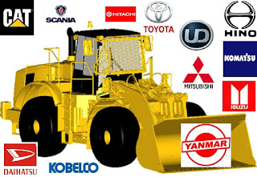

Jual Floor Deck Harga Murah di Bengkulu ☎ ??? (www.dis.or.id)
Pada kesempatan kali ini, kami berkesempatan untuk membahas beberapa produk tentang atap. Tergantung setiap kebutuhannya, bagi bangunan yang megah mungkin beton akan menjadi pilihan. Karena tanpa atap maka sebuah bangunan tidak dapat disebut bangunan dan hanya dapat disebut sebagai bangunan terbengkalai. Salah satunya adalah atap galvalum, atap lengkung maupun genteng metal. Pada kesempatan kali ini saya akan membahas beberapa jenis atap, seperti atap galvalum, atap lengkung, seng gelombang, plat seng & plat galvalum dan masih banyak lagi. Tidak tertarik dengan galvalum? Maka masih tersedia genteng metal yang akan saya bahas di pertemuan kita kali ini. Ada pula atap galvalum dengan bentuk unik seperti atap lengkung, gelombang dan lain sebagainya. Penasaran seperti apakah fungsi galvalum sebagai atap? Silakan simak artikel berikut ini.
Distributor & Supplier Floor Deck (Bondex)

Floor deck atau bondek merupakan material pengganti material konvensional yang berbentuk seperti papan lebar atau triplek. Biasa di gunakan sebagai alas dalam proses pembuatan lantai dan atap dak beton. Produk material ini berfungsi untuk menggantikan fungsi bekisting pada saat melakukan pengecoran plat pada lantai. Pemakaian dari floor deck Bengkulu juga bisa membuat proses pengerjaan dan pembuatan dak menjadi lebih mudah, cepat dan efisien.
Floor deck berkualitas tinggi bisa anda dapatkan dengan mudah yaitu mengunjungi situs dis.or.id. Anda juga bisa langsung memesannya ataupun hanya ingin mengetahui detail harga yang di patok dari floor deck Bengkulu tersesbut.
Info Pemesanan Selengkapnya
Google Maps: https://www.google.com/maps/d/u/0/viewer?mid=1vSGA7eD7ctB-ierGsro9yf6LdDAQHeLS&ll=-6.2537250295094555%2C106.82745&z=15
Note: https://www.facebook.com/notes/distributor-of-industrial-supply/kontraktor-jasa-floor-hardener/1783168878649658/
Event: https://www.facebook.com/events/534395173592364/
Portfolio Produk: https://www.facebook.com/1681607345472479/photos/?tab=album&album_id=1685055588460988
Distributor & Supplier Besi Beton

Besi beton adalah besi yang digunakan untuk penulangan konstruksi beton atau biasa dikenal sebagai fungsi badan bertulang. Besi Beton mengandung banyak batang tulangan yang dapat memikul beban berat. Pendidikan sangat penting karena digunakan dalam berbagai bentuk struktur bangunan baik bangunan kecil maupun bangunan besar seperti jembatan, Bendungan, terowongan dan masih banyak lagi. Dan besi beton polos memiliki penampakan benda dengan permukaan licin atau tidak bersirip.
Besi beton polos sangat jarang digunakan kecuali digunakan sebagai kolom.
Segera kunjungi dis.or.id untuk mendapatkan besi beton yang anda inginkan. Kualitas dan mutunya pun telah terjamin. Jadi, anda tidak perlu ragu lagi.
Distributor & Supplier Steel Grating

Steel Grating kini dikenal sebagai salah satu produk yang bermanfaat untuk proses pembangunan. Saat ini, Plat Grating bisa di dapatkan dengan mudah. Umumnya, Grating digunakan untuk kolam renang. Grating ini disusun dari baja berkalit dan dilas di bagian permukaan silangnya. Selain untuk keamanan, juga untuk aksesoris kolam renang. Terbuat dari bahan yang hot deep galvanis sehingga grating tidak mudah berkarat meskipun terkena air hujan di setiap harinya.
Distributor & Supplier Pipa (Hitam/Gas, Galvanis)

Pipa hitam gas galvanis pemanfaatannya sangat berbeda dengan jenis pipa pada umumnya, banyak sekali manfaat yang diperoleh dengan mengaplikasikan jenis pipa ini. Pipa hitam banyak sekali diaplikasikan pada area pertambangan minyak gas karena ia memiliki struktur yang 3 kali lebih kuat dari jenis pipa biasa. Pipa hitam gas galvanis banyak digunakan untuk keperluan area pertambangan minyak gas, untuk itu banyak juga yang mengira pipa hitam ini adalah pipa gas. Pipa hitam gas dapat anda aplikasikan untuk berbagai keperluan bahkan di segala kondisi cuaca indonesia. Pipa hitam gas terjual dengan berbagai ukuran, ukuran paling kecil yang tersedia adalah ½ inc dan paling besar 40 inc. Segera hubungi kami untuk info pemesanan selengkapnya maupun berkonsultasi mengenai kebutuhan pipa secara langsung.
Distributor & Supplier Kawat Bronjong/Gabion

Kawat bronjong berfungsi sebagai pencegah erosi. Kawat ini juga ada yang berbahan galvanis. Selain itu, sebenarnya kawat bronjong ini juga bisa dikatakan sebagai pemerkuat bukit. Ini biasanya diterapkan pada tebing tinggi yang sangat rawan sekali terjadi longsor atau erosi karena air hujan. Maka dari itu, kekuatannya untuk menahan tebing tinggi yang mungkin bisa longsor tidak perlu dipertanyakan lagi. Selain itu, kawat ini juga digunakan sebagai pemecah gelombang ringan.
Kawat bronjong kini dapat anda temui dan dapatkan dengan mengunjungi dis.or.id. Karena disana terdapat kawat bronjong dengan berbagai ukuran dan berbagai jenis. Karena disana anda akan mendapatkan penawaran mengenai kawat bronjong denga berbagai ukuran.
Distributor & Supplier WF H-beam

Saat ini, banyak orang yang ingin mencari jenis besi WF, terlebih ini zaman yang serba modern dan praktis. Kekuatan dari besi ini sangat besar dan padat serta kuat dengan daya tekan dan tarik yang tinggi. Di samping itu, besi ini juga mempunyai sisi padat yang bagus.
Maka dari itu, kualitasnya sudah terjamin. Besi ini tergolong jenis besi yang ringan disertai dengan komponen yang sesuai sehingga Anda tidak perlu keberatan saat memakai jenis besi ini.
Untuk itu bagi anda yang sedang mencari besi baja dengan kualitas terbaik.
Distributor & Supplier Expanded Metal

Expanded Metal adalah sebuah material dari baja yang dibentuk dengan model berlubang hampir mirip dengan anyaman. Umumnya penggunaan dari Expended Metal ini adalah untuk walkway atau catwalk, anak tangga pada tower serta banyak juga digunakan di dermaga/konstruksi lepas pantai/pertambangan. Umumnya dipergunakan sebagai partisi pengaman gudang, railing, pelindung mesin, pagar penjara, plafond, dan lain sebagainya.
Jika anda ingin lebih mengetahui keunggulan yang dimiliki oleh expanded metal, anda bisa langsung mengetahuinya dengan mengunjungi dis.or.id. Kunjungi dis.or.id untuk memesan expanded metal dengan harga yang murah serta mutu yang terjamin.
Distributor & Supplier Plat (Hitam, Kapal, Bordes, Strip)

Plat kapal adalah plat yang sudah tentu diperuntukan untuk bahan pembuatan instalasi kapal, namun untuk pemakai material ini tidak hanya untuk kapal saja akan tetapi biasa dipergunakan untuk bahan tangki,konstruksi dan fabrikasi, perbedaan yang sangat khas untuk material ini adalah ditinjau dari segi ukuran yang lebar dan panjang. Pada umumnya disebut plate kapal dikarenakan biasa digunakan untuk bahan pembuatan badan kapal dan mempunyai standart spesifikasi material yang beragam untuk spesifikasi. Dengan membeli secara online, anda akan lebih efektif dan efisien dalam melakukan pemesanan. Mahalnya harga tergantung dari ketebalan besi, motif, dan campuran bahan yang digunakan. Plat besi memang ada yang tipis dan tebal, perihal ukuran ini akan kita sampaikan secara detail pada topik yang berbeda.
Oleh Karena itu dis.or.id dapat menjual plat besi yang murah dengan kualitas yang bagus. Segera hubungi nomor dis.or.id dan segera order karena dis.or.id adalah agen resmi yang langsung mengambil plat hitam ini dari pabriknya. Tak perlu khawatir harga, karena harga yang di patok pastinya sangat murah dan terjangkau.
Distributor & Supplier Atap Galvalum

Saat ini bangunan modern minimalis dan properti sudah sering dijumpai menggunakan atap galvalum. Apalagi bila ruangan tersebut tidak dilengkapi pendingin ruangan.
Banyak sekali kelebihan yang dimiliki oleh atap galvalum ini. Patut anda ketahui, jenis baja yang saya maksud kali ini bukan baja berat seperti halnya alat berat, melainkan baja ringan, sehingga tidak akan membebani dinding rumah anda. Saat proses pemasangan rangka pada bagian atap.
Ada anggapan bahwa atap galvalum membuat suasana menjadi panas dan bersik. Galvalum sendiri mempunyai banyak kelebihan diantaranya adalah anti panas. Harus diakui bahwa atap seng yang digunakan dapat menyebabkan rumah terasa panas. Bila anda mencari atap galvalum dengan berbagai ukuran, maka anda datang ke tempat yang tepat.
Distributor & Supplier Atap Lengkung

Bagian yang berfungsi sebagai pelindung bagi pengguna dan isi bangunan dari panas, hujan dan berbagai macam cuaca adalah atap. Baik atap tersebut terbuat dari besi, aluminium, galvalum, zincalum kayu dsb. Atap dapat mempercantik bagian atas dari bangunan anda.
Bila atap sudah bocor maka kualitas dari atap tersebut akan diragukan. Salah satu jenisnya adalah atap lengkung. Seperti namanya, atap lengkung adalah atap yang bentuknya melengkung sehingga membuat bangunan yang dinaunginya terlihat megah.
Namun, saat ini pembahasan saya adalah atap dengan bahan galvalum dengan bentuknya yang unik. Maka sudah pasti bahwa kualitas atap tersebut sangat diragukan. Nah, atap lengkung inilah yang berjasa membuat stadion tersebut terlihat megah. Bila anda tertarik untuk mempunyai atap lengkung pada bangunan anda maka janganlah ragu. Karena kami adalah tangan pertama yang bertindak sebagai supplier, toko sekaligus distributor.
Distributor & Supplier Truss Canal C

Sudah tahukah anda apa yang dimaksud dengan galvalum? Galvalum memang istilah yang kerap kali kita dengar dan umumnya memang sangat erat kaitannya dengan baja. Bangunan yang menggunakan besi kanal c juga tidak sedikit. Sehingga akan awet bahkan dengan karat sekalipun. Pilihan ini amatlah tepat mengingat bahwa besi ini sangat melengkapi kekurangan dalam pembangunan rumah minimalis tersebut. Namun karena semakin susahnya mendapatkan raw materialnya, dan harga yang semakin ahal maka pemilihan besi kanal C menggantikan fungsi kayu dinilai adalah langkah yang tepat. Oleh karena itu, jangan ragu lagi atas kegunaan besi yang satu ini. Bila anda mencari kanal c atau truss maka anda sudah datang ke tempat yang tepat.
Distributor & Supplier Hollow Galvalum

Apakah anda sedang membutuhkan atau mencari informasi seputar hollow galvalum? Penasaran dengan fungsinya? Harganya? Atau keterangan keterangan lainnya.
Karena hollow galvalum ini dapat ditemukan di toko bangunan khusus yang keberadaannya juga sudah menjamur. Pastikan untuk menghubungi kami saat ini juga. Namun sayangnya masih banyak pekerja bangunan yang masih terkendala dari segi pemasangan nya. Tertarik untuk membeli? Hubungi kami sekarang juga, karena kami memiliki penawaran menarik untuk anda.
Distributor & Supplier Seng Gelombang

Atap adalah hal penting yang harus diperhatikan pada setiap bangunan. Meskipun begitu, nyatanya seng gelombang memiliki kekurangan yakni ia lebih cepat menyerap panas. Seng gelombang warna memiliki banyak keunggulan dari segi manapun, anda bahkan tak perlu lagi melakukan cat ulang pada seng gelombang atap yang jenis ini. Tak heran jika seng gelombang melengkapi fiturnya dengan menyediakan beragam ukuran seng gelombang menurut standar SNI. Sedangkan sekarang ini telah tersedia berbagai macam atap bangunan berbentuk seng gelombang yang memiliki banyak keunggulan, baik dilihat dari fungsi maupun harga jual pasarnya.
Tetapi, janganlah ragu dengan hal demikian. Jika anda membutuhkan seng gelombang kecil ini sekarang juga, maka segera hubungi kami di dis.or.id untuk kepentingan lebih lanjut.
Distributor & Supplier Plat Seng

Seng atau Plat gavalum dapat dikatakan pembaruan dari seng biasa pada umumnya, karena jenis seng ini tidak panas, tidak bising, anti karat, tahan lama dan masih banyak kelebihan lainnya. Harga plat galvanis lembaran akan lebih mahal dibandingkan dengan harga per meter.
Harga plat galvanis lembaran dan per meter juga berbeda beda. Jika anda penasaran dengan harga plat galvanis ini, silahkan hubungi customer service kami untuk menanyakannya. Selain lebih hemat, juga anda tidak harus membuang bagian yang tersisa. Plat gavalum sendiri sering dinilai sebagai pengganti seng biasa terbaik, plat jenis ini sudah banyak digunakan untuk talang, pabrik, rumah, ataupun kebutuhan outdoor lainnnya.
Disana banyak sekali info yang sangat berguna untuk anda yang sedang mencari plat seng & plat galvalum sesuai kebutuhan anda. Lalu berapa harga plat galvanis 2018? Bila anda sedang mencari harga terbaru hari ini juga, anda dapat menghubungi kami karena kami menjual plat galvanis, galvalum dengan berbagai ketebalan dan ukuran.
Distributor & Supplier Genteng Metal

Penggunaan zincalume memang memberikan keuntungan khusus yang tidak akan anda temukan di genteng keramik pada umumnya. Berbicara tentang genteng metal memang akan identik dengan perbandingan metal vs keramik. Selain itu genteng metal dinilai lebih anti bocor. Salah satu varian genteng metal yang populer adalah genteng metal pasir, jenis ini dinilai yang terbaik karena sudah terbukti lebih tahan panas, dan juga mampu membantu dalam peredaman suara saat hujan. Genteng metal pasir adalah genteng yang memiliki bobot yang ringan tetapi memilki kekuatan yang tinggi sehingga genteng metal pasir adalah genteng yang memilki kualitas yang terbaik dibandingkan dengan genteng metal lainnya. Genteng metal dinilai lebih praktis dan lebih awet. Jika anda masih agu lagi, kami sarankan untuk anda untuk mengubungi kami secara langsung.
kami berusaha mencari kepuasan pelanggan kami.
Distributor & Supplier Besi Wiremesh

Jika anda membutuhkan besi lonjor yang membentuk anyaman anda dapat membeli jenis besi wiremesh pada kami. Besi wiremesh sering di anggap banyak orang adalah besi anyam karena strukturnya yang mirip dengan anyaman. Dengan memiliki bentuk yang mirip seperti besi anyam, pemanfaatan besi ini sangat banyak terutama dalam dunia konstruksi, salah satunya adalah sebagai plat lantai dan dak beton. Setiap struktur dari besi wiremesh ini telah didesain khusus untuk berbagai kebutuhan, anda bisa memanfaatkannya sesuai dengan kekuatan dan jenis strukturnya. Untuk ketebalan besi wiremesh 8 – 10 adalah peruntukkan untuk bangunan bertingkat. Sementara ketebalan 4 – 6 dimanfaatkan untuk bangunan biasa. Karena di produksi dengan teknologi masa kini yaitu sistem las otomatis, menjadikan pengerjaan susunan kawat lebih rapi dan lebih kokoh. Bagi anda yang membutuhkan besi wiremesh, kini dapat memesan pada kami!
Distributor & Supplier Pagar BRC

Pagar BRC dibuat dari besi beton berukuran diameter 5 mm – 8 mm sehingga tergolong kuat sebagai pagar pengaman. Potongan besi berdiameter tertentu tersebut dig abungkan dengan bantuan mesin las wiremesh. Pagar BRC termasuk pada kategori pagar besi yang siap pakai, anda bisa memanfaatkannya untuk berbagai kebutuhan bangunan. 5 kali dari kekuatan besi biasa. Pagar BRC memiliki daya tahan sampai > 10 tahun karena ia tergolong besi yang tahan karat karena sudah terlapisi dengan lapisan galvanis. Disini kami siap menerima pesanan pembuatan pagar BRC untuk anda yang membutuhkan.
Distributor & Supplier Kawat Loket, Kawat Harmonika

Apalagi bila anda membeli jenis kawat loket harmonika yang sudah terlapisi dengan galvanis sehingga ia awet dan tahan terhadap korosi. Kami menyediakan kawat harmonika dengan berbagai ukuran, tersedia ukuran kawat dengan diameter 1,5 mm sampai 4 mm dan ukuran lubang 20 mm sampai 70 mm.
Distributor & Supplier CNP & UNP

Besi UNP atau yang biasa disebut dengan besi kanal merupakan besi yang memiliki bentuk lengkung seperti huruf U dan biasanya diaplikasikan sebagai sambungan atau dudukan atap. Selain sebagai material konstruksi sambungan, besi kanal U banyak digunakan untuk kebutuhan penutup dinding / girts. Besi UNP sebenarnya memiliki spesifikasi yang hampir sama dengan wide flange, hanya saja besi UNP mudah menekuk sehingga sangat jarang digunakan sebagai kolom bangunan. Besi CNP memiliki bentuk yang hampir mirip dengan huruf C sehingga ia sering disebut sebagai profil C / balok purlin. Besi CNP sangat fleksibel karena materialnya dapat dimodifikasi dengan menggunakan plat koil. Tak hanya bermanfaat untuk kepentingan konstruksi bangunan saja, material besi ini sangat berguna dalam dunia otomotif.
Distributor & Supplier Besi Siku

Salah satu material besi baja yang memiliki banyak manfaat untuk kehidupan ini adalah besi siku, jenis material ini bahkan bermanfaat untuk kebutuhan rumahan. Besi siku menjadi salah satu material yang dapat diandalkan sebagai besi penyangga. Dengan bentuk kedua sisinya yang tegak lurus, anda bisa manfaatkan besi ini untuk keperluan rumah tangga ataupun furniture. Ukuran panjang dari besi siku yang kami sediakan adalah panjang 6 meter, dan ketebalan yang bisa anda sesuaikan dengan kebutuhan. Jika anda membutuhkan besi siku ini, segera hubungi kami! Kami menjual besi siku yang kokoh dan tahan lama. Besi siku dapat anda manfaatkan untuk beragam kebutuhan konstruksi, bangunan, furnitur, dan lainnya. Segera hubungi kontak kami untuk mengetahui spesifikasi besi siku yang anda butuhkan.
Distributor & Supplier Hollow (Hitam, Galvanil, Galvanis)

Besi hollow banyak sekali dimanfaatkan untuk kebutuhan proyek bangunan karena kualitasnya yang lebih kuat dibanding kayu. Jika saat ini anda membutuhkan besi hollow, anda dapat menghubungi kontak yang telah tersedia atau kunjungi saja website resmi kami di dis.or.id. Kami telah menyediakan besi hollow hitam galvanil galvanis yang bisa anda pesan langsung. Apabila anda membutuhkan material hollow hitam, kami dapat melayani kebutuhan anda tersebut dengan berbagai spesifikasi ukuran. Kami pun merupakan distributor relasi dari dis.or.id yang menawarkan produk hollow hitam galvanil galvanis dengan kualitas terbaik dan harga yang murah. Terdapat besi hollow dengan berbagai ukuran yang bisa anda pesan langsung, misalnya: ukuran besi hollow 40 x 40 x 2 mm x 6 Meter, 50 x 50 x 3 mm x 6 meter hingga ukuran 150 x 150 x 5 mm x 6 meter.Segera hubungi kontak kami untuk info lebih lanjut. anda dapat memesan besi hollow hitam galvanil galvanis tersebut dengan berbagai ukuran, baik ukuran besi hollow 40 x 40 x 2 mm x 6 Meter, 50 x 50 x 3 mm x 6 meter sampai dengan ukuran 150 x 150 x 5 mm x 6 meter. Kami menyediakan besi hollow hitam dengan ukuran 40, 50, 150 dan lain sebagainya dengan panjang rata-rata 6 meter. Untuk anda yang membutuhkan besi ini, kami menyediakan ukuran besi hollow yang variatif 40 x 40 x 2 mm x 6 Meter, 50 x 50 x 3 mm x 6 meterr sampai dengan ukuran 150 x 150 x 5 mm x 6 meter. Manfaat besi hollow dalam kehidupan ini banyak sekali, diantaranya untuk keperluan pagar, teralis, pintu besi, dan berbagai kebutuhan lain. Butuh info lebih lanjut? Anda dapat menghubungi kontak yang telah tersedia. Untuk informasi detail mengenai panjang dan harganya, segera hubungi kami. Anda bebas untuk menentukan ukuran pesanan besi hollow yang dibutuhkan pada kami.
Distributor & Supplier Pipa Pancang

Sebagai salah satu konstruksi bangunan, tentu saja pipa pancang sudah cukup di kenal. Salah satu yang di maksud adalah DIS. apalagi jika yang di katakan adalah di industri DIS ini. Bukan hanya kualitas bahannya saja yang bagus tetapi juga untuk pembuatannya. Dengan begini, maka dalam penggunannya, pipa pancang juga bisa di aplikasikan secara maksimal.
Jasa Pondasi Bor (Strouss/Borepile)

oleh karena itu, jika Anda ingin menggunakan jasa pengeboran, tidak dapat di pungkiri lagi bahwa hal itu akan sangat membantu sebagai solusi. Terkait jasanya tidak perlu jauh-jauh karena di sini Anda bisa menemukan pemesanan yang mudah. untuk masalah kualitas pun tidak perlu di pertanyakan lagi karena hasilnya akan sangat terjamin mengingat pelakunya adalah mereka yang sdah berpengalaman dan merupakan jasa profesional. Namun perlu di ketahui pula bahwasanya selama proses akan memunculkan suara bising sekalipun tanpa getaran. Jika mengenal pengeboran lebih jauh, sebenarnya ada dua jenis yakni manual dan otomatis dengan penggunaan mesin. Selain penggunaan jasa pondasi bor, Anda bisa memiliki mesin sendiri. sedangkan dari segi kualitas pun keduanya tidak jauh berbeda.
Distributor & Supplier Genset (New/Second)

Untuk genset atau singkatan dari generator set ini, pasti juga sudah banyak di kenali. Dalam penggunaannya, genset ini menggunakan bahan bakar berupa solar. Biasanya penjualan genset ini bisa berupa genset baru atau bekas. Nah, untuk pembelian keduanya, bisa Anda dapatkan pula di DIS.
Dengan harga genset yang cukup tinggi, memang akan lebih ringan jika membeli genset yang sudah second. Akan tetapi, jika menginginkan kualitas terpercaya, maka bisa juga memilih membeli yang masih baru saja. sedangkan dari segi merk, genset sendiri juga cukup variatif.
Distributor & Supplier UPS

Kalau menyebut UPS, mungkin akan banyak yang bertanya-tanya sebenarnya apa sih barang yang satu ini. Dalam hal inI tentu saja akan sangat penting untuk memilikinya. Terutama bagi para pengguna komputer yang tergantung terhadap enegi listrik. Terutama bagi yang sering menggunakan komputer. Sedangkan dari jenisnya, UPS cukup variatif. Karenanya, ketika Anda membeli UPS ini, sebaiknya memastikan terlebih dahulu seberapa besar kapasitas yang Anda butuhkan. Sedangkan untuk pembeliannya, Anda bisa mendapatkan barang di DIS. Sedangkan dalam penjualan, di sini kami menawarkan UPS dengan kualitas terjamin dan harga memadai.
Distributor & Supplier Forklift (Second)

Dalam setiap industri, baik itu industri kecil, menengah, hingga yang besar, tentu saja akan banyak yang menggunakan forklif. Oleh karena itu, banyak penjualannya di mana-mana. mengimbangi akan hal itu, tidak heran jika kini penjualan forklif ada di mana-mana. Dengan bahan yang terjamin tersebut, tentu saja tujuan penggunaan forklif ini akan semakin memudahkan setiap aktifitas di industri Anda. Nah, dengan kualitas yang bagus ini, maka forklif akan membuat aktivitas industri Anda menjadi lebih mudah dalam berbagai hal. Sedangkan yang lebih menguntungkan lagi darinya adalah, ketika Anda sudah tidak memerlukannya, maka bisa di jal kembali pada distributor forklif.
Jasa Pembuatan Moulding Inject

Anda sedang bingung untuk membuat plastik yang tepat sebagai wadah salah satu produk Anda, maka jangan khawatir karena banyak jasa yang bisa di manfaatkan untuk pembuatannya termasuk di DIS. Jasa tersebut akan selalu siap membantu Anda. Selain itu berapa pun kebtuhan Anda, pasti bisa di layani. Bukan hanya masalah kuantitas akan tetapi juga untuk kualitasnya. Dengan demikian pencetakan plastik ini bisa tepat sasaran.
Jasa Pembuatan Sparepart Mesin Produksi / Alat Berat

Dalam setiap proyek pembangunan, adanya alat berat atau sparepart tentu bukanlah hal yang asing pula. terkait akan hal itu, bisa di akui pula bahwa pembuatan mesin ini sangat penting untuk menjadi perhatian. Salah satunya adalah sebagaimana yang di tawarkan industri DIS. Perlu di ketahui pula bahwa dalam pembuatan ini memang tidak bisa sembarangan. alasannya adalah, jika ada kesalahan yang cukup fatal, maka bisa jadi akan membahayakan pekerja yang sedang menggunakannya. Sedangkan harga penawaran, untuk setiap alat berat bisa berbeda tergantung jenis dan ukurannya. hal ini di sebabkan karena jika ada kesalahan, maka akibatnya akan fatal dan bisa membahayakan para pekerja yang menggunakannya. Nah, kalau di DIS, maka Anda pun akan mendapatkan alat berat yang berkualitas dan di jamin aman.
Jasa Service Elektronik (Kompor Gas, Dispenser, Mesin Cuci)

Service elektronik, kini sudah banyak di temui. Dengan service ini, maka ketika ada masalah dengan barang Anda, jika belum parah bisa kembali berfugsi seperto semula. Kalau berbicara masalah kualitas, jangan khawatir karena DIS menyediakan service handal yang akan melakukan perbaikan sempurna. Barang yang bermasalah pun bisa berfungsi seperti sedia kala. Akan tetapi pada umumnya, orang-orang yang melakukan service elektronik adalah pada barang yang bermasalah.
Nah, apakah anda sudah mengerti betapa pentingnya atap untuk keperluan setiap pembangunan? Tentu sangat penting bukan? Atap sangat dibutuhkan dalam setiap pembangunan sehingga membuatnya sering dicari. Dari yang modern sampai konvensional atap selalu ada di setiap bangunan. Ada pula bangunan yang tak beratap dan hanya menjadi pondasi. Tapi salah satu solusi selain hal tersebut adalah menggunakan atap dengan berbagai jenis sesuai dengan yang saya bahas diatas. Seperti yang saya jabarkan diatas fungsi atap sudah tidak terbantahkan dan tidak dapat digantikan lagi. Jangan lupa untuk mengujungi official site kami dis.or.id dan dapatkan info & penawaran menarik seputar atap dan masih banyak lagi bahan bangunan yang lain.